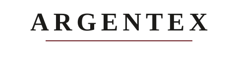
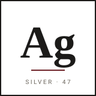
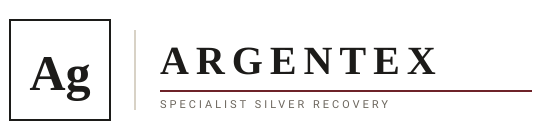

Argentex (Pty) Ltd
Three type-led directions, all built from the design system: Georgia, ink on paper, a single oxblood hairline. No decorative iconography. The smart thread is Ag, the chemical symbol for silver, from argentum, the root of the name Argentex.
The design system's official mark: ARGENTEX in letter-spaced Georgia caps over a 1px oxblood rule. Use this as the primary logo in the header, on documents and in the footer.

On paper
Reversed (note)
A compact monogram for favicons, avatars, the email signature stamp, and anywhere the full wordmark is too small. Ag in Georgia inside a 1px square, with an oxblood rule and a quiet sans caption tying it to silver and atomic number 47.

On paper
On paper-deep
Mark and wordmark together, divided by a hairline, with a sans descriptor. Use on a cover page, a letterhead, or a deck title slide where you want the full identity to introduce itself once.

On paper
On paper-deep
Files are vector SVG, so they stay crisp at any size and print sharp. Located in assets/. For print or third-party use, convert the Georgia text to outlines so it renders identically on machines without the font.